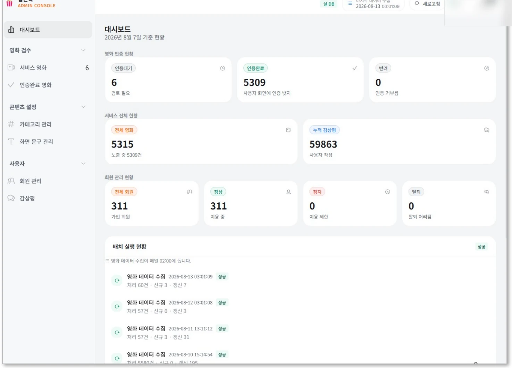
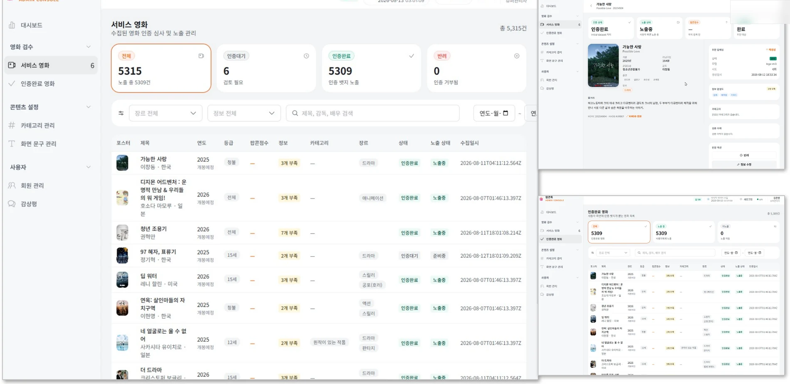

추천 검증 고도화
검색 정확도와 추천 근거의 적합도 개선
설계에서 운영까지
공공·민간 데이터 플랫폼에서 수집부터 BI까지.
반복되는 운영 문제를 표준과 자동화로 바꿉니다.
DATA ENGINEER
개발 경력 5년+ 웹 개발 → 데이터 엔지니어링
데이터 엔지니어 · 프로
웹 개발자
BATCH RELIABILITY & ORCHESTRATION
과거 누락 구간의 자동 복구 범위
기존 고정 4시간에서 확장
일별 배치가 참조하는 00시 구간도 복구 대상으로
Oracle·SAS 기반 전환에서 1,000개 이상 dbt 모델의 배치 최적화를 담당했습니다.
시간별 누락이 일별 배치에 이어지지 않도록, 성공 시점과 다음 처리 범위를 관리했습니다.
담당 배치 최적화 · 오케스트레이션 표준화
기여 100% · 배치 최적화 담당 영역 기준
SELECTIVE WORKLOAD ISOLATION
배치 최적화 담당
선정 모델의 실행 환경 분리
공통 함수 기반 적용
모델의 의존성은 유지하고 실행 위치를 바꿨습니다. 대상 선정부터 기존 TaskGroup 제외, Serverless 연결까지 적용 절차를 정리했습니다.
상시 클러스터 증설 없이 피크 시간대의 자원 경합을 완화했습니다.
환경 Amazon Redshift Provisioned · Serverless / Airflow · dbt 도식 범위 주요 연결만 표시, 개별 run·test 상세는 생략
DOMAIN-BASED ORCHESTRATION
1,000개 이상 dbt 모델
BI·최종 테이블 기준 도메인
운영팀과 실행 범위 합의
기술적 분할에 앞서, 함께 쓰는 테이블과 업무의 최종 결과를 기준으로 실행 단위를 정했습니다.
DAG 파싱 부하와 워커 점유를 완화하고, 여러 수행사가 같은 개발·운영 기준을 사용할 수 있게 했습니다.
프로젝트 환경 Airflow 2.10 · dbt · Redshift · ECS Fargate · Bitbucket · Bamboo · Confluence
QUALITY & OBSERVABILITY
Diff Check DAG 개발
Grafana 조회 경량화
기존 운영 대시보드 수정
전환 데이터가 맞는지, 배치가 제때 끝나는지 확인할 수 있어야 운영도 이어집니다. 품질과 실행 상태를 각자의 흐름으로 정리했습니다.
dbt test·후행 중복 검증에 더해 주요 컬럼의 건수와 값을 함께 비교했습니다.
수행사와 고객사가 같은 결과를 확인하도록 해 수작업 검증과 반복 협의를 줄였습니다.
메타 DB 조회 지연이 스케줄러에 영향을 주어, 문제가 된 쿼리 구조를 경량화했습니다.
실행 추이·실패 태스크·Pool Slot·배치 지연율을 정리하고 스케줄러 응답을 정상화했습니다.
검증 결과와 실행 상태를 공통으로 확인해, 운영 판단에 필요한 근거를 일관되게 제공했습니다.
주요 데이터·조회 흐름을 설명한 도식입니다. 실제 테이블·SQL·운영 식별자와 상세 스키마는 생략했습니다.
STANDARDS & INGESTION
이기종 데이터 표준화
수집·갱신 자동화
테이블별 적재 전략
원천의 특성을 먼저 이해하고, 반복되는 적재 판단을 공통 규칙과 실행 코드로 옮겼습니다.
PUBLIC SECTOR / 2023.09 — 2024.12
TeraStream · Hive · Hadoop
Python · Shell
기관별 형식 차이로 반복되던 BLOB 적재 오류에 대응해 ETL 공통 개발 가이드와 표준을 수립했습니다. 적재 실패를 줄이고 파이프라인 안정성을 높였습니다.
메타데이터의 수집 여부를 판단하는 Python 전처리·수집 프로그램을 개발해 반복 수집·갱신 작업을 자동화했습니다.
PRIVATE SECTOR / 2021.07 — 2022.05
AWS S3 · Glue · Athena
Airflow · Python
모든 테이블을 Full Load할 때의 불필요한 처리·비용을 줄이고자 볼륨·휘발성·예상 증가량·갱신 주기를 분석했습니다.
테이블별 적재 대상·우선순위와 Full·Incremental 기준을 마련하고, 이에 맞는 Airflow DAG 코드를 생성·적용했습니다.
도식은 본인 담당 업무의 순서입니다. 프로젝트 전체 아키텍처나 모든 플랫폼 구성요소의 개인 설계·운영 범위를 나타내지 않습니다.
MAPPING & SHARED AGGREGATES
누리꿈소프트(주)
지자체 정책 수립 의사결정 지원
200여 개 통계·BI 화면
정책지원시스템 개발에서 외부 통계의 수집·매핑과 공통 집계 구조를 담당했습니다. 화면별로 다른 통계를 일관된 기준으로 조회하도록 구성했습니다.
행정안전부의 지자체 코드와 외부 통계의 지자체명을 연결해야 했습니다. 지자체·주기·화면 ID의 매핑 기준을 정리해 서로 다른 통계를 정책지원 화면에서 활용하도록 했습니다.
지자체 정책 수립에 필요한 노령인구·출산율 등 외부 통계를 수집하고, 200여 개 통계·BI 화면에서 사용할 집계 결과를 공통 Fact로 조회하는 구조를 설계했습니다.
화면별 집계 쿼리는 화면 ID 조건과 월·분기·반기·연 단위의 주기 필터를 바꿔 재사용하도록 구성했습니다. 화면 추가와 개발·운영 시 반복 작업을 줄이는 데 초점을 맞췄습니다.
환경 BI-Matrix · InnoQuartz · SAP HANA · Oracle · Python 담당 OLAP 개발 선임 · Admin / 기여도 70% · OLAP·Admin·외부 연계 핵심 담당
WORKFLOW & VALIDATION
본인 담당: 유형분류 11개 화면
기초 설정 · 산출 · 비교 · 확정
기존 통계청·행안부 데이터와 전문기관 산출물을 대조하며, 산출 조건과 결과를 관리하는 업무 흐름을 구현했습니다.
| 선택 | 지표명 | 기준연도 | 가중치 |
|---|---|---|---|
| ☑ | 지표 A | 20YY | 60% |
| ☑ | 지표 B | 20YY | 40% |
| 행정단위 | 자치단체명 | 지표 A · 20YY | 지표 B · 20YY | 반영점수 |
|---|---|---|---|---|
| 예시 단위 | 자치단체 A | 예시값 | 예시값 | 예시점수 |
| 예시 단위 | 자치단체 B | 예시값 | 예시값 | 예시점수 |
기준 구분 유형분류연도와 지표의 운영회계연도를 구분하고, 선택 지표의 가중치 합계 100%를 확인합니다.
적용 후 저장 산출 내용을 선택 차수에 저장합니다. 확정 차수는 재적용할 수 없고 결과도 직접 수정할 수 없습니다.
| 자치단체명 | 기준그룹 | 비교그룹 | 그룹변동 | 반영점수 차이 |
|---|---|---|---|---|
| 자치단체 A | 그룹 1 | 그룹 2 | 변동 | −5 |
| 자치단체 B | 그룹 1 |
양식·매칭 검증 전문기관 Excel의 필수 필드를 확인해 저장합니다. 자치단체명 불일치는 빈 셀로 표시하고 등급·점수 차이를 비교합니다.
| 차수 | 확정 여부 | 지표·가중치 요약 |
|---|---|---|
| 1차 | 미확정 | A 60% · B 40% |
| 2차 | 확정 | A 60% · B 40% |
연도당 한 차수 기존 확정을 취소한 뒤 다른 차수를 확정할 수 있습니다. 전문기관 결과 비교는 확정의 필수 선행 조건이 아닙니다.
재정위기관리는 외부 통계 API와 분리된, 지자체 예산 관련 내부 업무 화면으로 구현했습니다.
WEB FOUNDATION
루나랩스 / Backend · Frontend
2021.03 — 2021.05 · 기여도 70%
임직원 건강관리·환경 공정시설 통합 포털 개발
Vue.js · Spring Framework · MSSQL
2021.02 — 2021.03 · 기여도 70%
평가 히스토리 관리 도입·평가 메뉴 전체 로직 재설계
Java · Spring Framework · JavaScript · Oracle
PERSONAL MOVIE AI AGENT
4인 팀 · 기여도 40%
데이터·AI Agent·NCP 구현 참여
최종 프로젝트 평가 우수상
실무에서 다룬 데이터 신뢰성과 재처리 관점을, 영화 추천 서비스의 검색 근거와 품질 검수로 확장했습니다.
NIPA-NAVER CLOUD SOVEREIGN AI PBL
영화 선택에 시간이 오래 걸리고, 취향과 현재 상황을 반영한 답변에도 사실 근거가 부족했습니다. 분산된 영화 정보·리뷰·평점과 관람 기록을 연결하는 Personal Movie AI Agent를 구현했습니다.
개인화 · 설명 가능성누구와 보는지, 기분과 시청 가능 시간을 함께 반영하고 추천 이유와 근거를 설명합니다.
검증 · 안전한 응답영화 정보·요청 조건·리뷰 근거를 재검증하고 실패 시 필요한 단계부터 재실행합니다.
본인 담당데이터 수집·임베딩·검색, Agent 처리·검수 흐름, NCP 설계·Terraform 구성에 참여했습니다.
DEMO SNAPSHOT / 2026.08
발표 당시 구현 데이터이며 상용 운영 지표가 아닙니다.
화면은 팀 구현 결과, 기여 범위는 왼쪽에 별도 명시했습니다.
DATA TO EVIDENCE
KOBIS · KMDB
PostgreSQL 16 · pgvector
메타데이터 · 리뷰 임베딩
LLM의 자체 지식에만 기대지 않고, 실제 영화 정보와 리뷰를 검색 가능한 형태로 저장해 응답 생성에 연결했습니다.

수집·적재 담당: 스케줄 수집 후 정제·병합해 PostgreSQL에 저장했습니다. 관리 화면은 인증 상태와 일별 배치 처리 결과를 함께 보여줍니다.

검색 근거 담당: 영화·리뷰 임베딩을 저장하고 검색 결과의 근거 ID를 생성 단계에 전달했습니다. 팀의 관리 화면에서는 영화 정보·인증·노출 상태를 검수합니다.
REVIEW & TARGETED RETRY
LangGraph 상태 그래프
QueryPlan · 검색 근거 ID
검수 결과에 따른 재실행
입력·분류·검색·생성·검수를 분리해, 모든 실패를 같은 방식으로 반복하지 않도록 흐름을 구성했습니다.
ARCHITECTURE & NEXT
NCP · Terraform
서비스와 수집 경로 분리
공개 가능한 논리 구성도
사용자 요청, 수집·적재와 AI API 호출을 구분했습니다. 확인되지 않은 세부 네트워크 방식은 구성도에서 단정하지 않았습니다.
NEXT / 교육 팀 구현 이후의 개인 확장 방향
검색 정확도와 추천 근거의 적합도 개선
현재 관람 가능한 서비스 안내 연계
평점·리뷰 누적으로 취향 모델 고도화
이 페이지의 구성도와 구현 성과는 2026.08 교육 팀 범위입니다. 이후 개인 확장과 Snowflake 향후 PoC는 별도 단계이며, 완료 실적에 포함하지 않았습니다.
TECHNOLOGY
Front / API Next.js · React · TypeScript · Tailwind CSS
Python · FastAPI · SQLAlchemy
AI / Data HyperCLOVA X · CLOVA Studio · LangGraph
RAG · PostgreSQL · pgvector
Infra NAVER Cloud Platform · Terraform